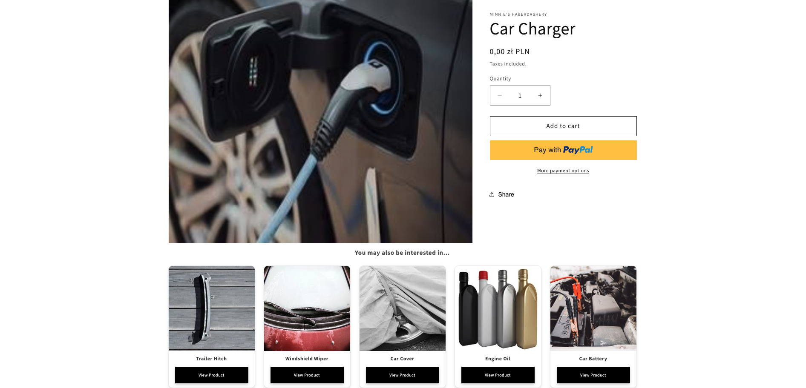

Enhancing Shopify with Real-Time Recommendations Using Nussknacker and Machine Learning
Overview: Bridging Data Streams and E-commerce
In today’s fast-paced world of online shopping, providing customers with a personalized experience isn't just a bonus—it's essential. Customers expect suggestions tailored to their interests and browsing behavior. While modern recommendation systems leverage vast datasets to predict preferences, seamlessly integrating these systems into existing platforms pose challenges. Businesses need real-time data processing and scalable machine learning solutions to meet these demands.
In this article, we demonstrate how Nussknacker (Nu), paired with Snowplow, a popular open-source event tracking system, can transform raw event data into actionable insights. Using Shopify as an example, we showcase how Nu processes click streams and app events in real time. With Nu MLflow component, pre-trained machine learning models can be effortlessly integrated into the streaming process, enabling businesses to deploy custom models for dynamic, personalized recommendations instantly.
By combining real-time data streams with advanced machine learning, Nu helps businesses exceed customer expectations, driving engagement and boosting sales. Nu Designer simplifies complex data processes, making it accessible even for teams without coding expertise or/and without deep knowledge of streaming and Flink. As we delve into this use case, we’ll explore how Nu, Snowplow, and custom machine learning models come together to elevate e-commerce personalization.
Use Case: Real-Time Recommendations
We aim to deliver real-time personalized product recommendations in Shopify by following these steps:
- Capture User Interactions: Use the Snowplow tracker to collect clickstream data from the Shopify store and send it to the Nu Cloud HTTP endpoint for processing.
- Process Events: Parse incoming event data in Nussknacker, group products viewed by users within a specific time window, and prepare data for ML model input.
- Generate Recommendations: Utilize the MLflow component in Nussknacker to feed grouped product data into a machine learning model for real-time recommendations.
- Send Recommendations to Shopify: Use the Nu HTTP component to update Shopify's backend with personalized recommendations via the Shopify API.
- Display Recommendations: Leverage the Shopify Storefront API and custom JavaScript in Liquid templates to fetch and render recommendations directly on product pages.
This use case demonstrates how Nussknacker efficiently handles real-time event data, integrates user-supplied machine learning models, and enhances e-commerce platforms like Shopify with personalized recommendations. With this overview in mind, let's delve deeper into each step to see how we can implement this solution.
NOTE: This blog post is designed to be both an informative guide and a hands-on tutorial. Readers can either:
- Follow along to understand the use case conceptually, or
- Recreate the entire scenario step by step using the instructions provided in the collapsed sections.
For those interested in replicating the solution, detailed step-by-step instructions have been included in expandable sections. These cover everything from setting up the environment to configuring the Nussknacker scenario. To recreate this use case, you'll need a Nu Cloud instance. You can sign up for a free 3-month trial (no credit card required). This trial provides the necessary environment to implement and test the solution described in this post.
Capturing Shopify Events with Snowplow
To kickstart our real-time recommendation system, we establish a reliable flow of user interaction data from our Shopify store to Nussknacker using Snowplow.. Snowplow is a well-known solution for capturing user interactions, offering open-source trackers that we can easily leverage. We use newly created Shopify store. Then we configure an HTTP endpoint in our Nu Cloud instance to receive events directly from the Snowplow tracker integrated into our store. This setup allows us to capture detailed user behavior in real time, providing the critical data needed to power our recommendation engine.
Expand for detailed instructions on how to do this
Preparing the Shopify Store
First, we create a Shopify store by signing up for a free trial on their website. It's essential to make the store publicly accessible so we can interact with it as customers do. This involves adjusting the store's settings to remove password protection, allowing anyone to view the storefront.
Setting Up the Nu Cloud Instance
Next, we access our Nu Cloud instance and configure the settings to allow incoming events from the Snowplow tracker. After signing in to our Nu Cloud, we click the right-top corner "Admin" button to go to the instances list and we stop our instance to make the necessary changes (in the instance Settings):
- We disable authorization by checking the "No authorization" option. Since the Snowplow tracker sends events directly from the browser, standard authentication isn’t suitable.
- We set the trusted domain to the address of our Shopify store. This ensures that only events from our store are accepted.

After saving the changes, we restart the instance to apply the new settings.
Creating the Nu HTTP Endpoint
With the instance configured, we proceed to create an HTTP endpoint that will receive events from the Snowplow tracker. We click "Open Instance" button and then navigate to the topics list and add a new topic named "shopify-events". We select "JSON" as the content type to match the data format sent by Snowplow.
Once the topic is created, we copy the provided endpoint URL. This URL will be used to configure the Snowplow tracker in our Shopify store.

Configuring the Snowplow Tracker in Shopify
Back in Shopify, we install the Snowplow Event Tracker app from the Shopify App Store. After installation, we access the app through the "Apps" section in the Shopify admin console. In the frontend settings of the app, we activate the tracker and input the necessary configuration:
- We paste the Nu Cloud endpoint URL into the "Snowplow Collector" field.
- We enter an App ID, such as "shopify-nu-recommendations", to identify our application.

After saving the settings, the Snowplow tracker begins sending events from our Shopify store to the Nu Cloud endpoint.
Verifying Events Flow
To ensure everything is working correctly, we navigate through our Shopify store as a visitor would. Even if we haven't added any products yet and the store is empty, we can still generate events by interacting with the site. We click on the catalog, navigate to existing pages, and explore different sections of the store. These actions will trigger Snowplow events.
After interacting with the store, we return to the Nu Cloud instance topics list and check the "shopify-events" topic we created earlier. In the "Last Messages Preview" section, we should see the events we've just generated.
Stream Processing Made Easy with Nussknacker
With our Shopify store sending events to Nu Cloud via Snowplow, we're ready to harness Nussknacker’s capabilities to process these events. The events collected by the HTTP endpoint are stored in Kafka, which serves as the source for our Nussknacker scenario. Although we don't utilize predefined Snowplow event schemas, Nussknacker's flexible JSON parsing allows us to handle the incoming data effectively. We leverage standard Nussknacker components like Filter and Variable to parse and validate the events, extracting essential information such as user identifiers, viewed products, and timestamps. In addition, we include a debugging sink, which in our user case is one of several Nussknacker methods, to monitor and ensure that our and ensure that our scenario is working correctly.
This data processing setup ensures that only relevant data is passed to our machine learning model, laying the groundwork for generating accurate and personalized recommendations.
Expand for detailed instructions on how to do this
Setting Up the Scenario
On the scenario list page, we click the "Add New Scenario" button to create a new streaming scenario. In the dialog that appears, we select "Streaming" as the processing mode and name the scenario "shopify-realtime-recommendations". After clicking "Create", we're taken to the scenario editor.
In the scenario editor, we see an empty canvas where we’ll design our data processing algorithm. From the Creator Panel on the left, we drag and drop the kafka source component onto the canvas. We use it because the events collected by the previously created HTTP endpoint are stored in Kafka topics within Nu Cloud. And thanks to this, we can retrieve these events directly from Kafka and process them in our scenario. This setup allows us to efficiently handle the incoming events from our Shopify store in real time.
We double-click on the source node to configure it. In the properties window, we:
- Name: Change it to "Shopify Snowplow Events" for clarity.
- Topic: Select "http.shopify-events" from the Topic dropdown, which is the topic where Snowplow events are collected. (We created this topic in the previous section)
- Content-Type: Set it to "JSON" to match the format of the incoming data.

After applying these settings, we save our scenario.
Adding a Sink Component for Debugging
To verify that events are flowing correctly, we add a sink component that writes the incoming events to a new topic for inspection. Follow the instructions from the previous section to create a new topic, named "shopify-found-recommendations" with "JSON" as the content type.
Note: Refer back to the earlier instructions if you need a refresher on creating topics.
Returning to the scenario editor, we drag the "Kafka" sink component onto the canvas and place it below our source node. We we connect the source node to the sink node by drawing a connector between them. Then we double-click the sink node to configure it:
- Name: "Log Recommendations"
- Topic: Select "http.shopify-found-recommendations" from the Topic dropdown.
- Value: Enter
#inputto pass the incoming data directly to the sink.
After applying these settings, we save our scenario.
Visualizing the Scenario
Before we proceed, it's helpful to see the overall scenario we've built so far.
Deploying and Testing the Scenario
With our scenario set up, we save and deploy it by clicking the "Deploy" button in the right panel of the scenario editor. After a while the scenario should be in the running state. To verify that everything is working correctly, we perform the following steps:
-
Generating Events: Before generating events, it’s important to have some example products in your Shopify store. If you haven’t added any products yet, please do so now. Once you have added some products, navigate to your Shopify store as a visitor would. Click on various product pages, add items to the cart, and explore different sections of the store. These interactions will generate events that our scenario can process, including product view events that are essential for testing our data extraction logic.
-
Monitoring Event Flow with Counts: Back in the scenario editor, we click on "Counts" in the "Metrics" section on the right-hand side menu. We enable auto-refresh by clicking on "No Refresh", which changes to "Auto-refresh in 10 seconds". We select "Latest Deploy" from the "Quick Ranges" options to view the most recent data.
As we interact with the store, we observe the numbers on each node increasing, indicating that events are flowing through the scenario. This real-time feedback confirms that our scenario is receiving and processing events as expected.
-
Inspecting the Output Topic: We navigate to the Topics list in Nussknacker and select the "shopify-found-recommendations" topic. In the "Last Messages Preview" section, we can see the messages that have been processed by our scenario. These messages should include the data extracted from the events, such as the user ID, product slugs, and timestamps.
By following these steps, we confirm that our scenario is correctly processing events from our Shopify store, including the product view events necessary for generating personalized recommendations.
Extracting Relevant Data
Our goal is to extract specific data needed for our machine learning model:
- User Identifier
- Viewed Product Identifiers
- View Timestamps
Since our clickstream contains many events, we'll filter out the unnecessary ones and extract the required information from the relevant events. Without a predefined JSON schema, we'll manually parse the JSON data using Nussknacker's expression language (which is SpEL). We'll use "Variable" and "Filter" nodes together, where each filter validates the variable extracted.
Building the Data Extraction Logic with Nussknacker
To prepare our data for the machine learning model, we’ll implement the data extraction logic. This will be achieved by a sequence of processing steps (nodes in the Nu scenario). Each step involves extracting and validating essential information from the incoming events, ensuring that only relevant data moves forward in our scenario. By the end of this section, we’ll have a robust data extraction pipeline that feeds clean, structured data into our model. Let’s dive into the steps involved:
-
Extracting and Validating the Message Schema
We add a "Variable" node after the source node to extract the message schema:
- Name: "Extract Message Schema"
- Variable Name:
messageSchema - Expression:
#input["message"]["schema"].toString()
Immediately after, we add a "Filter" node to validate the schema:
- Name: "Validate Message Schema"
- Expression:
#messageSchema == "iglu:com.snowplowanalytics.snowplow/payload_data/jsonschema/1-0-4"
This ensures only events with the correct schema proceed further.
-
Extracting and Validating the Viewed Product Event
Next, we add another "Variable" node to extract the page view event:
- Name: "Extract Viewed Product Event"
- Variable Name:
viewedProductEvent - Expression:
#input["message"]["data"].^[#this["e"] == "pv"]
We follow this with a "Filter" node:
- Name: "Validate Viewed Product Event"
- Expression:
#viewedProductEvent != null
This extracts the page view event JSON object and ensures it exists.
-
Extracting and Validating the App ID
We add a "Variable" node to extract the App ID:
- Name: "Extract App ID"
- Variable Name:
snowplowTrackerAppId - Expression:
#viewedProductEvent["aid"]?.toString()
Followed by a "Filter" node to validate it:
- Name: "Validate App ID"
- Expression:
#snowplowTrackerAppId == "shopify-nu-recommendations"
This ensures the event originates from our Snowplow tracker.
-
Extracting the Anonymous User ID
We add another "Variable" node:
- Name: "Extract Anonymous User ID"
- Variable Name:
anonymousUserId - Expression:
#viewedProductEvent["duid"]?.toString()
This extracts the user identifier for personalization.
-
Extracting and Validating Product Details
We use a "Record Variable" node to extract the product identifier and view timestamp. Since there is no better candidate for identifying a product, we will use its slug as the product’s identifier.
-
Name: "Extract Product Details"
-
Variable Name:
product -
Fields:
-
slug with Expression:
#viewedProductEvent["url"]?.toString()?.startsWith("https://your-store.myshopify.com/products/") ? #viewedProductEvent["url"]?.toString()?.substring("https://your-store.myshopify.com/products/".length()) : nullNote: Replace
https://your-store.myshopify.comwith your actual store URL. -
viewTimestamp with Expression:
#viewedProductEvent["dtm"]?.toLong()
-

We then add a "Filter" node to validate the extracted data:
- Name: "Validate Product Details"
- Expression:
#anonymousUserId != null && #product.slug != null && #product.viewTimestamp != null
-
-
Updating the Sink to Output Extracted Data
We double-click the sink node to edit it:
-
Value: Enter:
{ "userId": #anonymousUserId, "product": #product }
This ensures the sink outputs only the relevant data.

-
Deploying and Testing the Enhanced Scenario
After implementing the data extraction logic, we save and redeploy the scenario by clicking the "Deploy" button. To test our enhancements, we repeat the testing procedure outlined in the Deploying and Testing the Scenario section. By revisiting the testing steps, we ensure that our enhancements are functioning as intended and that the scenario continues to process events correctly.

Incorporating Machine Learning for Dynamic Recommendations
Personalized product recommendations based on the products a user has viewed require a robust machine learning learning model capable of capturing both short-term and long-term user preferences. We find SLi-Rec (Short-term and Long-term preference Integrated RECommender system), a deep learning-based framework designed to enhance personalized recommendations by modeling users' sequential behavior. SLi-Rec uses self-attention mechanisms to effectively capture both long-term and short-term user preferences.
Key Features of SLi-Rec:
- Self-Attention Mechanism: Identifies relationships between items in a user's interaction sequence, enhancing the representation of user preferences.
- Fusion of Long- and Short-Term Interests: Balances immediate trends with established patterns for better recommendation accuracy.
- Efficient Sequential Modeling: Processes user interaction sequences dynamically, improving predictions for the next item of interest.
In the realm of recommender systems, two paradigms are most popular today: general recommenders and sequential recommenders.
General recommenders, such as factorization-based collaborative filtering methods, aim to learn users' long-term preferences, which are presumed to be static or change slowly over time. While these systems can provide decent recommendations, they often fail to reflect users' recent behaviors. They also require periodic retraining on collected historical data to account for any changes in users' preferences.
Sequential recommenders, on the other hand, strive to capture the variability of user behaviors influenced by evolving interests, demands, or global trends. These recommenders operate on sequences of user actions, meaning any changes in preferences and the order of those actions both influence the provided recommendations. This attention to both short-term and long-term interests makes sequential recommenders superior in use cases requiring real-time product recommendations.
Given our goal of delivering real-time, personalized recommendations in our Shopify store, SLi-Rec's ability to integrate both short-term and long-term user interests makes it an ideal choice. By leveraging SLi-Rec within our Nussknacker scenario, we can dynamically respond to users' immediate behaviors while also considering their historical preferences, thereby enhancing the overall shopping experience.
A Word About ML In Nu
To integrate our machine learning model into the Nussknacker processing pipeline, we utilize Nussknacker's support for model inference through its MLflow component. This feature allows us to incorporate machine learning models directly into our streaming data flows, enabling real-time predictions.
Using the MLflow component, we select a specific model from the MLflow Model Registry. The MLflow Model Registry is a centralized repository that manages the lifecycle of ML models, providing versioning and easy deployment options. Within Nussknacker, we assign the required input parameters to the model, aligning it with the data we've extracted from our events.
During the scenario deployment to the Flink runtime environment, Nussknacker retrieves the selected model from the registry and deploys it within the Nussknacker ML runtime, a distributed execution environment optimized for Python-based machine learning tasks. This specialized runtime ensures models developed in Python integrate smoothly, providing both performance and scalability for continuous inference when using the model in stream processing.
The Flink job, orchestrated by Nussknacker Designer, communicates directly with the deployed model in the ML runtime to perform inference. With this setup, our streaming application delivers real-time predictions based on incoming data, maintaining low latency and enabling rapid, data-driven decision-making.
By leveraging Nussknacker's MLflow component, we effectively bring our machine learning models into the streaming context, allowing us to provide dynamic, personalized recommendations to users as they interact with our Shopify store.
For a deeper dive into how this process works, you can read Łukasz Jędrzejewski’s blog post. In the section "MLflow model inference simplified with Nussknacker ML runtime", he explains the integration in detail, showcasing how Nussknacker simplifies model inference in streaming applications.
Preparing and Registering the Recommendation Model
To utilize our selected recommendation model within Nussknacker, we first need to train it with the relevant data. We’ve provided a comprehensive Jupyter notebook and detailed instructions to guide you through setting up your environment on Azure Databricks, training the model, and registering it in MLflow. Once the model is trained and registered, it’s ready to be integrated into our Nussknacker scenario. This integration enables us to turn aggregated user interactions into real-time personalized product recommendations, leveraging the power of machine learning.
Expand for detailed instructions on how to do this
Setting Up Azure Databricks
Before diving into the notebook, we need to set up the environment where we’ll train the recommendations model. This guide walks you through the necessary steps to prepare Azure Databricks for seamless execution of the notebook.
For this task, we’ll use Databricks, a popular platform for collaborative data science and machine learning. Specifically, we’ll leverage Databricks on the Azure cloud to efficiently build, train, and deploy our model. If you don’t already have an Azure subscription, you can sign up for a free trial at the Azure Portal.
NOTE: If you already have an Azure Databricks account, you can go to the "Installing Required Libraries" subsection
By the end of this section, you’ll have a fully configured Azure Databricks environment, ready to run the notebook and train the recommendations model.
Create a Resource Group
We start by setting up our environment on Azure by creating a resource group:
- Log in to the Azure Portal and navigate to Resource Groups.
- Click the "Create" button to create a new resource group.
- Select your subscription, provide a name for the resource group, and choose a region that suits you.
- Click "Review + Create", and once validation passes, click "Create" to finalize the setup.
Creating a Databricks Workspace
Next, we create a Databricks workspace within the resource group:
- Navigate to Azure Databricks services in the Azure Portal.
- Click "Create" to set up a new Databricks workspace.
- Choose your subscription and the resource group you just created.
- Provide a name for your workspace and select the same region as before.
- Click "Review + Create", and after validation, click "Create".
- Wait for the deployment to complete. This may take a few minutes.
- Once finished, click "Go to resource" to access your new Databricks workspace.
Creating a Compute Cluster
We have to create a compute cluster to run our notebook and train the model:
-
In the Databricks workspace, click on "Compute" in the left-hand menu.
-
Click "Create Cluster".
-
Configure the cluster settings:
- Cluster Mode: Select "Single Node".
- Databricks Runtime Version: Choose "14.3 LTS" or a version that supports Python 3.10.
-
Leave other settings at their default values.
-
Click "Create Cluster". The cluster creation process may take a few minutes.

Installing Required Libraries
With the cluster created, we need to install the necessary Python libraries:
-
Click "Launch Workspace" to open the Databricks workspace in a new tab.
-
In the "Compute" section, click on your newly created cluster.
-
Navigate to the "Libraries" tab.
-
Click "Install New".
-
In the "Install Library" dialog:
- Library Source: Select "PyPI".
- Package: Enter the library name and version.
-
Using the method mentioned above, install the following libraries one by one:
mlflow-skinny[databricks]mlflow==2.18.0recommenders==1.2.0tensorflow==2.12.1
-
Wait for all libraries to be installed successfully before proceeding.
Importing the Python Notebook
Now, we import our prepared Jupyter notebook into the Databricks workspace:
- In the left-hand menu, click on "Workspace".
- Click the "Create" button and select "Git Folder".
- Enter the Git repository URL: https://github.com/TouK/recommendations-showcase
- Click "Create" to clone the repository into your workspace.
- You should now see the notebook "recommendations_model_training" in the "model-training" folder of your workspace.

Creating a Shopify Token
Our notebook requires access to your Shopify store to fetch data and interact with products. We create a private app to generate an API token:
-
In your store Settings (find the **"Settings" button in the left-bottom of Shopify admin panel), navigate to **"Apps
and sales channels"**. -
Click on "Develop apps".
-
Click "Create an app".
-
Provide an app name (e.g., "nussknacker_ml_notebook") and click "Create app".
-
In the app settings, go to the "Configuration" tab.
-
Click "Configure" in "Admin API integration" section, and select the necessary permissions:
write_product_listingsread_product_listingswrite_productsread_productswrite_publicationsread_publications
-
Click "Save" to apply the permissions.
-
Navigate to the "API Credentials" tab.
-
In the "Access tokens" section, click "Install app".
-
Confirm the installation, and Shopify will generate an access token.
-
Copy the token and store it securely, as it will be needed in the notebook.
Running the Notebook
Now we're ready to run the notebook and train our model:
-
In the Databricks workspace, navigate to the imported notebook recommendations_model_training.ipynb in the
model-trainingdirectory. -
Attach the notebook to your compute cluster by selecting the cluster from the dropdown menu at the top of the notebook.
-
Follow the instructions within the notebook, executing each cell in order.
-
In the first step of the notebook, you have three options for data sources:
- Option 1: Generate synthetic data if your Shopify store doesn't have products.
- Option 2: Use your own data.
- Option 3: Use an existing dataset.
-
If you've just created the Shopify store and have no products or limited data, Option 1 is recommended.
-
Proceed through the notebook, ensuring you input any required parameters, such as the Shopify token and Databricks
credentials you obtained earlier.
NOTE: The model training process may take approximately 30 minutes. Be patient and ensure that your cluster remains active during this time.
Exposing Databricks MLflow Registry
To allow Nussknacker to communicate with the Databricks MLflow Model Registry, we need to expose it externally:
- Note the Workspace URL
-
In the Overview section of your Databricks workspace, note down the URL provided. We'll need this later for configuring Nussknacker.
- Set Up Service Principals and Secrets
To securely connect Nussknacker with the Databricks MLflow Registry:
-
In the Databricks workspace, click on your user icon in the top-right corner and select Settings".

-
Navigate to "Identity and access".
-
Click "Manage" button in the "Service principals" section
-
Click "Generate New Token".
-
Click "Add Service Principal" and "Add new" in the modal window
-
Choose "Databricks Managed", provide a name (e.g., "nu-cloud"), and click "Add".
-
Click on the newly created service principal's name.
-
Pick "Allow cluster creation" option and click "Update".
-
Navigate to the "Secrets" tab and click "Generate New Secret".
-
Copy both the "Client ID" and "Secret" values** and store them securely.

- Share the "recommendations-showcase" Repository
-
Navigate to "Workspace" in the left-hand menu, select "Home", and locate the "recommendations-showcase"
repository. -
Click the Share button in the top-left corner of the repository page.
-
In the "Type to add multiple users, groups or service principal" field, enter the service principal name
"nu-cloud" that you created earlier. -
Set the permission level to "Can View", then click the "Add" button.
-
Close the sharing modal to finalize the changes.

- Grant Read Permission for the Trained and Published Model
-
In the left-hand menu, navigate to "Models" under the "Machine Learning" section. You should see the
"slirec_shopify_model" listed. -
Click the "Permissions" button in the top-right corner of the model's page.
-
In the "Select user, group, and service principal..." field, enter "nu-cloud".
-
Set the permission level to "Can Read", then click "Add".
-
Save your changes by clicking the "Save" button.

The model registry is now accessible for read operations from outside the Azure Databricks platform.
Using Nu ML Component in Real-Time Data Processing
With the trained model prepared, we focus on embedding it into our Nussknacker scenario. The integration involves combining real-time data aggregation with machine learning inference to create a dynamic and responsive system.
First, we group product interactions for each user using Nussknacker’s Sliding Window aggregation component. This step collects product views of a single user over a defined time period (e.g., five minutes) and organizes them into structured data, including product slugs and timestamps. These aggregated events represent the user’s recent interactions, which serve as the input for the recommendation model.
Next, we integrate the machine learning model using the MLflow component. This allows us to seamlessly connect to the model hosted in the MLflow registry (in our case, Azure Databricks) and utilize the model's signature to correctly assign the aggregated data variables as inputs. During runtime, the model processes this input to generate personalized product recommendations in real time.
This powerful setup demonstrates how Nussknacker simplifies the integration of machine learning models into streaming data processes, enabling us to deliver a more engaging shopping experience to our customers. In the next step, we’ll bring these recommendations full circle by sending them back to Shopify for display, completing the loop from data collection to customer engagement.
Expand for detailed instructions on how to do this
Enable the Nu ML integration
First, we need to enable the MLflow component within Nussknacker to connect with our model hosted on Azure Databricks. This involves updating our instance settings to establish a secure connection.
First, please stop the scenario by clicking the "Cancel" button in the right-hand menu to stop our scenario. then we click on the "Admin" button located in the top-right corner. To apply new configurations,it's necessary to stop the instance temporarily. We do this by clicking the "Stop" button and wait until the instance status changes to "Stopped".
Once the instance is stopped, we access the instance settings by clicking on "Settings". In the "Manage Instance Enrichers" section, we find the "MLflow" card. Clicking on it opens a form where we need to input the details to connect to our MLflow server.
We fill in the following information:
- Name: We enter "azuredatabricks" as the identifier for our ML component within Nussknacker (you )
- Server URL: This is the URL from the "Overview" section of our Azure Databricks Service—the workspace URL we
noted earlier. - Token URL: We append
/oidc/v1/tokento the Server URL, forming the complete Token URL needed for authentication. - Client ID: This is the "Client ID" saved when we created the Service Principal in Azure.
- Client Secret: This is the "Secret" saved when we created the Service Principal in Azure.
- Scope: We set this to "all-apis".
After entering all the details, we click "Save changes" to apply the configuration. Returning to the instances list, we restart the instance by clicking "Start". Once the instance is running, we reopen our scenario editor.
In the "Creator Panel" on the left, under the "Enrichers" section, we confirm that the "azuredatabricks-mlflow" component is now available (you may need to refresh the page). This component allows us to integrate our model into the data processing flow.

Aggregating User Interactions
Our model requires specific inputs: the user ID, a list of viewed product slugs, and corresponding timestamps. Since each Snowplow event represents a single product view, we need to collect multiple events for each user over a period.
To achieve this, we use Nussknacker's "Sliding Window" aggregate component. This allows us to collect and aggregate data over a defined time window. We locate the "sliding-window" component in the "Custom" section of the Creator Panel. We drag it into the scenario, placing it between the "Validate Product Details" node and the "Log Recommendations" sink node.
Double-clicking the sliding window node opens its properties. We give it a descriptive name, such as "Aggregate Products for a Given User", and set the Output Variable Name to aggregatedProducts.
To group events by user, we set the Group By field to #anonymousUserId. This ensures that we aggregate events separately for each user.
In the "Aggregations" section, we define two aggregations:
- First Aggregation (Product Slugs):
- Output Field:
slugs - Aggregator Type:
List - Aggregator Input:
#product.slug
- Output Field:
- Second Aggregation (View Timestamps):
- Output Field:
viewTimestamps - Aggregator Type:
List - Aggregator Input:
#product.viewTimestamp
- Output Field:
We set the "Window Length" to 5 minutes, meaning the aggregation considers events from the last five minutes for each user. For each processed event, it produces an updated list of the user's viewed product slugs and their corresponding view timestamps.

After applying these settings, our scenario now collects and aggregates user interactions over a five-minute window, preparing the data needed for the model.
Integrating the ML Model
With the aggregated data ready, we proceed to integrate our machine learning model into the scenario.
From the "Enrichers" section in the Creator Panel, we drag the "azuredatabricks-mlflow" component into the scenario, placing it after the previously created aggregation node.
Opening its properties, we give it a meaningful name, such as "Infer Recommendations". We select our model "slirec_shopify_model" from the "Model" dropdown and choose the latest version available.
The component then displays fields for the model's input parameters:
- userId: We enter
#anonymousUserIdto pass the user's ID. - items: We enter
#aggregatedProducts.slugsto provide the list of viewed product slugs. - timestamps: We enter
#aggregatedProducts.viewTimestamps.![#this.toString()]to pass the list of timestamps,
converting each timestamp to a string as required by the model.
We set the "Output Variable Name" to recommendationsModelOutput, which will store the model's output.
After applying these settings, our model is now integrated into the scenario and ready to generate recommendations based on the aggregated user interactions.
Updating the Sink Node
To verify that the model is working correctly, we update the sink node to include the model's output in the data we write to the topic.
We open the "Log Recommendations" sink node and modify the "Value" field to:
{
"userId": #anonymousUserId,
"product": #product,
"aggregatedProducts": #aggregatedProducts,
"recommendationsOutput": #recommendationsModelOutput
}
This structure includes both the user ID, currently viewed product, aggregated products in 5 minutes windows and the recommendations model output.
Deploying and Testing the Scenario
With all components in place—including the MLflow component and the sliding window aggregation—we save the scenario and deploy it by clicking the Deploy button. After confirming the deployment, the scenario is up and running.
To test our enhancements, we once again follow the testing procedure outlined in the Deploying and Testing the Scenario section. However, this time, we’re focusing on verifying that the model inference is working and that we receive recommendations based on aggregated user interactions.
Using this method we confirm that the model inference works and that we receive recommendations for the aggregated products for each user.
Sending Recommendations Back to Shopify
With the machine learning model integrated into our Nussknacker scenario, we now turn our attention to sending personalized recommendations back to Shopify. This step ensures that the insights generated by our scenario are made accessible to users, enhancing their shopping experience.
Before sending the recommendations, we refine the model's output through a post-processing step. By limiting the number of recommended products to a maximum of 10, we ensure the suggestions remain concise and relevant. This highlights Nussknacker’s flexibility in adapting raw model inference results to meet specific business needs.
To handle the transmission of recommendations, we utilize Nussknacker's versatile HTTP component. This general-purpose tool seamlessly integrates with Shopify’s Admin API, even though the API relies on GraphQL. The HTTP component provides a straightforward and efficient way to communicate with Shopify’s backend, showcasing its adaptability for various integration scenarios.
While the recommendations need to be stored for retrieval, the storage backend could be any database or system that fits the business requirements. For this use case, we chose Shopify’s Metaobjects to simplify the setup. These Metaobjects associate the recommended products with a user ID, making them easy to manage and retrieve. However, this approach could be replaced with other storage solutions depending on the desired architecture.
With this we have successfully completed the technical flow: capturing user interactions, generating personalized recommendations using a machine learning model, and sending them back to Shopify for storage. This integration demonstrates the full potential of combining Nussknacker’s streaming capabilities with Shopify’s API to deliver real-time personalization.
The next step is to make these recommendations visible to customers. In the upcoming section, we’ll focus on how to display the recommendations within your Shopify store.
Expand for detailed instructions on how to do this
Post-Processing the Recommendations
Before sending the recommendations, we need to perform a simple post-processing step. Often, the raw output from a model isn't ready to be used directly and requires some adaptation. In our case, we decide to limit the number of recommendations to a maximum of 10 products to keep the suggestions concise and relevant.
To implement this, we add a new Variable node to our scenario:
-
Adding the Variable Node:
From the Creator Panel, we drag the Variable component into our scenario, placing it after the "Infer Recommendations" node.
-
Configuring the Variable Node:
We double-click the variable node to open its properties.
-
Name: We enter "Limit Recommendations" to reflect its purpose.
-
Variable Name:
recommendationIds -
Expression: We use the following expression to limit the recommendations:
#COLLECTION.take(#recommendationsModelOutput.itemIds, 10)This expression takes the first 10 items from the list of recommendations provided by the model.
-
We click "Apply" to save the changes.
-
Preparing to Send Recommendations to Shopify
With our curated list of recommendation IDs ready, the next step is to send these to Shopify so they can be displayed to the user. We decide to use Shopify's Admin API to store the recommendations in a custom metaobject. Although the API uses GraphQL, Nussknacker's flexible HTTP component allows us to interact with it seamlessly.
But before we start, let's:
Create an API Token in Shopify
To authenticate our requests, we need to create a private app in Shopify to generate an access token.
-
Accessing Shopify Admin Console:
We log into our Shopify admin panel and navigate to "Apps and sales channels" from the left-hand menu.
-
Creating a New App:
At the bottom of the page, we click on "Develop apps". On the "Develop apps" page, we select "Create an app".
-
Configuring the App:
- App Name: We enter "nussknacker_recommendations_scenario".
- We click "Create app" to proceed.
-
Setting API Permissions:
On the app's page, we navigate to the "Configuration" tab. Under "Admin API integration", we click
"Configure". We select the following scopes:write_metaobjects,read_metaobjects. We then click "Save". -
Installing the App and Retrieving the Token:
We move to the "API credentials" tab. In the "Access tokens" section, we click "Install app" and confirm the installation. Once installed, we click "Reveal token once", copy the token, and save it securely for later use.

Create a Metaobject in Shopify
To store our recommendations, we need to define a metaobject in Shopify associated with each user.
-
Navigating to Custom Data:
Back in the Shopify admin panel menu, we select "Custom data".
-
Adding a Metaobject Definition:
In the "Define you first metaobjects" section, we click on "Add definition".
-
Configuring the Metaobject Definition:
-
Name: We enter "nu_recommendation".
-
Fields:
- We click "Add field".
- In the field creation form:
- Type: We search for and select "Product".
- Name: We enter "products".
- Configuration: We choose "List of products".
- We click "Add" to add the field.
-
Options:
- We enable "Storefronts access".
- We disable:
- "Active-draft status"
- "Translations"
- "Publish entries as web pages"
-
We click "Save" to create the metaobject definition.
-
Using the HTTP Component to call Shopify Admin API
Assuming we have created the Shopify API token and the metaobject definition for storing recommendations, we're ready to send the recommendations to Shopify using the HTTP component.
-
Adding the HTTP Enricher Node:
From the Creator Panel, we locate the http enricher component. We drag it into the scenario, placing it after the "Limit Recommendations" variable node.
-
Configuring the HTTP Node:
We open the HTTP node's properties:
-
Name: We enter "Send Recommendations to Shopify".
-
URL: We set it to:
{your-store-address}/admin/api/graphql.json(Replace
{your-store-address}with your actual Shopify store URL.) -
HTTP Method: We select "POST".
-
Headers:
We add a header:
- Name:
X-Shopify-Access-Token - Value: The access token we obtained from Shopify earlier.
{ { name: "X-Shopify-Access-Token", value: "shpat_a827..." } } - Name:
-
Body:
We need to construct a GraphQL mutation to create or update the metaobject with the user's recommendations. We use the
#CONV.toJsonStringfunction to convert the list of recommendation IDs to a JSON string.Expression:
{ query: "mutation UpsertMetaobject($metaobject: MetaobjectUpsertInput!, $handle: MetaobjectHandleInput!) { metaobjectUpsert(handle: $handle, metaobject: $metaobject) { metaobject { id } userErrors { field message code } } }", variables: { handle: { handle: "customer-" + #anonymousUserId, type: "nu_recommendation" }, metaobject: { fields: { { key: "products", value: #CONV.toJsonString(#recommendationIds) } } } } } -
Output Variable Name: We set it to
sendRecommendationsResult. -
We click "Apply" to save the configuration.

-
-
Updating the Sink Node:
To verify that our recommendations are being sent correctly, we update the sink node.
-
We open the "Log Recommendations" sink node.
-
We modify the "Value" field to:
{ "userId": #anonymousUserId, "product": #product, "aggregatedProducts": #aggregatedProducts, "recommendationsOutput": #recommendationsModelOutput, "sendResult": #sendRecommendationsResult }This allows us to inspect the response from Shopify in our output.
-
We click "Apply" to save the changes.
-
Deploying and Testing the Scenario
With everything set up, we proceed to deploy and test our scenario. We save the scenario by clicking "Save", and then deploy it by clicking "Deploy".
To test the scenario after integrating the recommendations back into Shopify, we follow the same testing procedure outlined in the Deploying and Testing the Scenario section. However, this time, we focus on inspecting the sendResult field in the Last Messages Preview of the "Log Recommendations" node. This field provides the response from Shopify’s API, allowing us to verify that the recommendations are being sent successfully and the API is processing the requests correctly.
NOTE: >
Here is the exported scenario we created throughout this tutorial. If you encountered any issues or your own scenario isn’t running as intended, you can simply import this exported scenario into Nussknacker and compare with yours.
Rendering Recommendations in the Shopify Store
The final step in our journey is to display personalized recommendations directly within the Shopify storefront. By injecting custom JavaScript into a Liquid template of the Shopify theme, we can dynamically fetch and render recommendations using Shopify's Storefront API.
This approach is chosen for its simplicity, making it ideal for showcasing the integration. While it introduces a small delay due to Shopify's metastore refresh, this lag is entirely on Shopify's side and not related to Nussknacker's real-time processing capabilities.
For production use cases, alternative methods or platforms might be preferred for storing and fetching recommendations to minimize delay. However, for the purposes of this demonstration, this method effectively highlights how Nussknacker can integrate real-time machine learning insights with Shopify to deliver personalized user experiences.
Expand for detailed instructions on how to do this
Creating a Storefront API Token
To access the stored recommendations, we need to interact with the Shopify Storefront API. Since our recommendations are stored per duid (an identifier of an anonymous user), there's no risk of information leakage, and we can safely expose them publicly.
Here's how we generate the necessary token:
-
Access the Shopify Admin Console:
We log into our Shopify admin panel and navigate to "Apps and sales channels" from the left-hand menu.
-
Create a New App:
At the bottom of the page, we click on "Develop apps". On the "Develop apps" page, we select "Create an
app". -
Configure the App:
- App Name: We enter "shopify_theme_fetch_recommendations".
- We click "Create app" to proceed.
-
Set Storefront API Permissions:
In the app's page, we click on "Configure Storefront API scopes". We select the following scopes:
unauthenticated_read_metaobjects,unauthenticated_read_product_listings. We then click "Save". -
Install the App and Retrieve the Token:
In the "API credentials" tab, we generate an access token by clicking "Install app" in the "Access token" section. After the token is generated, we copy it and save it securely for later use.

Injecting Custom JavaScript into the Shopify Theme
With the token ready, we proceed to inject custom JavaScript code into our Shopify theme to fetch and display the recommendations.
-
Access the Theme Editor:
From the Shopify admin panel, we navigate to "Sales channels", and select "Themes" from "Online Store" section.
-
Customize the Current Theme:
Our current theme is "Dawn". We click on "Customize" to open the theme editor.
-
Edit the Theme Code:
In the theme editor, we click on the three dots in the top-left corner and select "Edit code" from the drop-down menu.

-
Locate the
main-product.liquidFile:In the file explorer on the left, we navigate to the "Sections" folder and find the
main-product.liquidfile. -
Add Custom JavaScript Code:
At the end of the
main-product.liquidfile, we add custom JavaScript code. This code extracts theduidvalue from the cookie, uses the Shopify Storefront API to fetch recommendations from the metaobject, and renders them in therecommendations-sectionHTML div. It refreshes the recommendations every second. You can find the code in our Github repository.Note: Remember to replace
{YOUR-SHOP-ADDRESS}with your actual store address and{USE-nussknacker_fetch_recommendations-HERE}with the token generated in the previous section. -
Add the Recommendations HTML Div:
We search for the text
product-media-modalwithin themain-product.liquidfile. Below that section, we add the HTML div where the recommendations will be rendered. We click "Save" to save our changes. You can find the code in our Github repository.
-
Add Custom CSS Styles:
Next, we need to style the recommendations section. We locate the
base.cssfile in the "Assets" folder. At the end of thebase.cssfile, we add custom CSS code. We click "Save" to apply the changes. You can find the code in our Github repository. -
Save and Test:
With all the changes saved, we navigate to our Shopify store to test the recommendations feature.
Testing the Implementation
We visit our Shopify store and browse several products. It might take about 20 seconds before the first recommendations appear. While Nussknacker processes events almost instantly, Shopify's metastore refresh can introduce some delay. This is important to keep in mind when testing.


Benefits of an Integrated Streaming Solution
Nussknacker empowers businesses to enhance e-commerce with real-time data processing and machine learning. By integrating easily with tools like Snowplow and MLflow, it offers a seamless way to handle complex data streams and deliver actionable insights.
Seamless Integration with Clickstream Data
Nussknacker captures and processes clickstream data from Snowplow, simplifying data collection and enabling businesses to focus on insights instead of infrastructure.
Real-Time Machine Learning
By allowing the integration of pre-trained models from platforms like Databricks, Nussknacker makes it simple to incorporate externally trained and managed models, enabling instant predictions and real-time personalization.
Flexible and Intuitive
Robust tools for data manipulation and a low-code interface allow businesses to adapt scenarios quickly, focusing on strategy rather than technical details.
Real-Time Recommendations
Nussknacker enables instant, personalized recommendations, improving customer engagement and driving conversions.
Conclusion: Transforming E-commerce with Real-Time Streaming and ML
Real-time data processing and machine learning are now essential for e-commerce success. Nussknacker simplifies this integration, enabling businesses to:
- Capture Insights Seamlessly: Easily process user interactions using Snowplow.
- Deliver Instant Predictions: Use real-time ML for personalization without complex infrastructure.
- Adapt Quickly: Modify and scale scenarios to meet business needs.
With Nussknacker, businesses can act on data instantly, reduce development complexity, and enhance customer experiences. It provides a powerful foundation for integrating real-time streaming and machine learning into modern e-commerce platforms.
Thank you for reading! We hope this inspires you to explore Nussknacker for your real-time data processing and machine learning needs. Feel free to reach out with questions or for support.